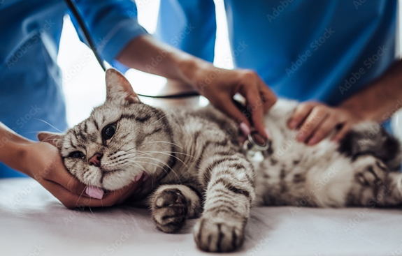

Urólitos
Os cálculos urinários podem surgir quando a urina fica supersaturada de sais dissolvidos e se
precipitam formando cristais, que se não forem excretados vão se agregando e formando os cálculos.
Portanto, pode haver formação de cálculos em qualquer região do trato, como nos rins, ureter,
bexiga ou uretra, a partir da urolitíase. A obstrução uretral tem maior frequência em cães machos
com idade entre seis e onze anos. Nas fêmeas pouco se observa obstruções. Os urólitos mais
encontrados em cães são os de estruvita e oxalato de cálcio.
Nos felinos a incidência de urolitíase entre os sexos parece ser igual, enquanto que as suas
manifestações clínicas divergem, pois, a obstrução uretral é comum no macho e a cistite e a uretrite
na fêmea. É entre os sete e nove anos de idade que os gatos apresentam maior risco de desenvolver
cálculos de oxalato de cálcio. Gatos mais jovens apresentam mais casos de cálculos por estruvita. Os
gatos que vivem dentro de casa apresentam maior predisposição para a doença do que aqueles que
vivem soltos fora de casa.
Etiologia:
Há uma série de fatores que contribuem para a formação dos urólitos, como o pH da urina, consumo
reduzido de água e tipo de dieta do animal. A supersaturação da urina com sais, combinada a um
alto aporte de minerais e proteínas na dieta é um dos fatores primários para formação de cálculos.
Casos de anomalias vasculares portais, hiperparatireoidismo primário, hipercalcemia, ou
hiperadrenocorticismo, são considerados fatores predisponentes para formação de urólitos, bem
como história familiar e predisposição racial.
Os urólitos são classificados de acordo com a composição dos cristais. Conhecer a composição do
urólito é importante, já que os métodos modernos de detecção, tratamento e prevenção são
baseados principalmente nessas informações.
Urólitos de estruvita e oxalato de cálcio:
Conhecidos como de maior ocorrência nos animais domésticos, os urólitos de estruvita são formados
por magnésio, amônia e fosfato. A infecção do trato urinário com bactérias produtoras de urease se
constitui na causa mais importante de cálculos de estruvita em cães. Seu aparecimento é mais
provável em casos de urina alcalina.
Em cães há dois tipos de urólitos de estruvita: os estéreis e os induzidos por infecção. Em gatos
normalmente ocorre sem infecção do trato urinário. Ocorrem em fêmeas com uma frequência maior
do que em machos.
Já os fatores que contribuem para a formação de urólitos por oxalato de cálcio incluem a
hipercalcemia, o uso e administração de substâncias calciuréticas, como furosemida e
glicocorticóides. Além disso, a ocorrência de hiperadrenocorticismo pode ser um fator
predisponente. Dieta com baixo índice de sódio, alta umidade e alta concentração proteica,
aumentam o risco de formação de oxalato de cálcio em cães de raças susceptíveis.
Atualmente os gatos apresentam uma maior incidência deste tipo de urólito. De forma geral, em
felinos a presença destes cálculos geralmente acompanha concentrações séricas de minerais
normais, até mesmo as de cálcio.
Urólitos de urato de amônio:
Urólitos de urato de amônio formam-se quando há maior quantidade de ácido úrico na urina, em
urina ácida, e quando há prejuízo da capacidade de converter ácido úrico em alantoína, o produto
final do metabolismo de purina mais solúvel, ou ainda por maior absorção de ácido úrico pelos rins.
Tais urólitos também podem ser resultado de hepatopatias.
Em cães, estudos sugerem que a formação destes urólitos pode estar relacionada com uma dieta
prolongada com rigorosa restrição proteica, e com a cirrose hepática.
Em felinos, são encontrados geralmente na bexiga, na uretra, ou em ambas, sendo os ureteres e os
rins os locais menos comuns; as causas de formação deste tipo de urólito em felinos até hoje não
foram estabelecidas.
Urólitos de fosfato de cálcio e cistina:
O fosfato de cálcio é mais encontrado como um componente de outros cálculos, como urólitos de
estruvita. São raros em cães e normalmente estão associados com distúrbios metabólicos como
hiperparatireoidismo primário, acidose tubular renal e excesso de fósforo e cálcio na dieta. O
hiperparatireoidismo também tem relação já que o paratormônio em excesso gera altos níveis
sanguíneos de cálcio e aumento da excreção urinária de fosfato. Em felinos, este tipo de urólito é
relatado com uma maior ocorrência em fêmeas.
Os de cistina também são raros em cães e gatos. A urina ácida reduz a solubilidade de cristais de
cistina, aumentando o risco de formação de cálculos. Os machos são mais susceptíveis para este tipo
de cálculo que as fêmeas, podendo ocorrer também, por alterações genéticas de transporte tubular
renal.
Urólitos de xantina e sílica:
Urólitos de xantina são incomuns na forma primária, geralmente ocorrendo secundários à
administração de alopurinol, inibidor seletivo das etapas terminais da biossíntese de ácido úrico,
para o tratamento de cálculos de urato. Já os urólitos de sílica são raramente detectados em cães e
gatos. Podem apresentar um formato de pedra e são relacionados ao aumento no aporte de silicatos,
ácido silícico ou silicato de magnésio na dieta. Os cães machos pastores alemães apresentam um
maior risco de formar cálculos urinários de silicato.
Predisposição:
Os fatores de riscos variam de acordo com a composição de urólitos e inclui também raça, sexo,
idade, se o animal é castrado ou não, se há infecção urinária. Alguns fatores comuns são:
Supersaturação urinária: onde pode ocorrer a cristalização devido à alta concentração de
íons cristalizantes, ocorre quando se tem mais soluto do que solventes, a ocorrência de
cristais irá depender da natureza do cristal, da temperatura e do PH.
Alteração do PH urinário: urólitos de oxalato de cálcio tem tendência a se formar em PH
ácido, já estuvitas geralmente ocorrem em PH mais alcalinos.
Frequência urinária: a frequência em que o animal faz a micção pode contribuir para
formação de urólitos, é comum ocorrer a cristalização em animais que ficam presos o dia
inteiro e só fazem micção quando vão passear.
Alimentação e ingestão de água: alimentos com excesso de minerais aumentam a secreção
desses compostos pela urina aumentando a sua super saturação e precipitação dos cristais,
abaixa a ingestão de água diminui a quantidade de solvente o que facilita o encontro de
cristais e sua crepitação.
Predisposição genética: Algumas raças possuem maior predisposição genética para
desenvolver certo tipo de urólitos.
Sinais clínicos
Normalmente os animais acometidos por urolitíase, apresentam uma série de sinais clínicos que
são: presença de animais com disúria, estrangúria, polaciúria e hematúria, outros sinais clínicos
como oligodipsia, polidipsia e até mesmo adipsia podem estar presentes nestes pacientes.
Dependendo do tipo de urólito, este pode proporcionar lesões na parede da vesícula, ocasionando a
hematúria, em alguns casos, pode estar associado a infecção bacteriana. Em alguns animais, pode
ser identificado a presença de odor fétido e pode ocorrer incontinência urinária.
Diagnóstico:
Para se realizar o diagnóstico de animais acometidos por urólitos, devemos realizar uma anamnese
completa, procurar saber se o animal já teve algum problema anterior relacionado a urólitos, qual
ração é fornecida para este animal, levando em conta que algumas dietas hiperproteicas podem
predispor a formação de cristais. Os exames para a identificação dos urólitos são, a radiografia, a
ultrassonografia, cistoscopia, e cistografia com duplo contraste. Os exames laboratoriais que podem
auxiliar na identificação são, hemograma, urinálise, urocultura, perfil bioquímico, ureia, creatinina.
Tratamento
O tratamento pode ser feito de forma clínica ou cirúrgica onde o tratamento clínico é utilizado
quando é possível diluir o cálculo ou evitar seu crescimento, podendo ser feito por um cateter,
cistocentese ou até mesmo deslocando o cálculo por hidropulsão; já o tratamento cirúrgico é usado
quando não dá mais para ocorrer a dissolução dos cálculos, como por exemplo em caso de
obstruções onde o cálculo não consegue sair.
Quando é feito o tratamento cirúrgico deve-se retirar todos os cálculos para evitar recidivas,
lembrando que este é um método invasivo e deve ser avaliar a condição do animal por inteiro devido
a utilização de anestesia geral, podendo ser também a epidural em casos de animais com
insuficiência renal. O tratamento ele deve ser elaborado de acordo com o paciente em questão, pois
deve ser levado em conta a idade do animal, sexo, condição do animal, cada urolito terá um
tratamento específico.
Estruvita: Cães com infecção bacteriana tratamos com antibiótico selecionado pelo resultado
da urocultura. O antibiótico deve ser feito durante o todo tratamento do cálculo, pois
conforme se dissolve liberam bactérias. Dar alimentos com menos quantidade de proteína
para diminuir a formação de uréia que é o alimento das bactérias. Dar alimentos que deixe o
pH ácido da urina. Estimular ingestão de água, evitar excesso de proteína, fósforo, fibra bruta
de magnésio.
Oxalato de cálcio: Não se tem estudos que mostrem fármacos que dissolvem esses urólitos,
então escolhe-se o método cirúrgico e posteriormente melhora da alimentação para evitar
recidivas. Estimular a ingestão de água, evitar excesso de proteína no alimento e evitar
alimentos com excesso de matéria mineral e fibra bruta.
Urato: Para diluir esses cálculos necessita que tenha diurese, diminuição de proteína na dieta
e com alimentos que deixem a urina mais alcalina. Pode usar Alopurinol que vai diminuir a
concentração de íons de urato e amônio na urina. Esta droga promove diminuição da
concentração de ácido úrico na urina. No entanto, ela pode aumentar a excreção urinária de
xantina, o que pode gerar urólitos desta substância. Portanto, para minimizar a formação da
xantina, o alopurinol deve ser administrado somente a animais que estão consumindo dietas
restritas em purinas. Não usar em animais com shunt.
Cistina: Diminuir proteína da dieta para diminuir cistina liberada na urina e também reduz a
concentração medular da uréia, diminuindo a densidade urinária. As drogas que contém tiol
D-penicilamina e N-(2-mercaptopropionil)-glicina se combinam com a cistina, formando
compostos muito mais solúveis que a cistina livre, sendo eliminados na urina. No entanto,
muitos efeitos colaterais têm sido associados ao uso dessas drogas.

Por Ana Paula Sanches, Gabriella Soares, Kelly Cristina Antonio, Maria Fernanda D'arc e Paula Felismino